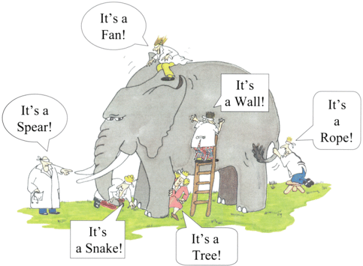
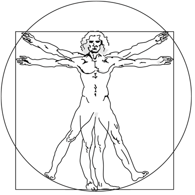
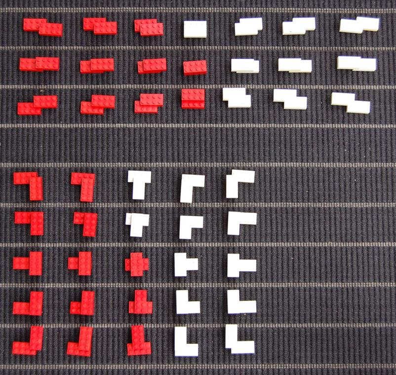
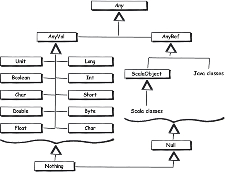

class: center, middle # Property-Based Testing in JavaScript Using JSVerify Michael Gilliland (@mjgpy3) <br /> [github.com/mjgpy3/presentations](https://github.com/mjgpy3/presentations) --- # Agenda - What is Property-Based Testing? - Enter JSVerify - Examples - When to use it? - When not to use it? --- # What is Property-Based Testing?  </img> --- # Let's start with a different question ### What is "normal" testing? --- # "Normal" testing is sniper-rifle testing </img> --- # Our testing is deliberate </img> --- # Sometimes we flat-out miss </img> --- # Property-based testing is shot-gun testing </img> --- # Our testing is _still_ deliberate </img> --- # Our coverage can be greater </img> --- # But we can still miss! </img> --- # Enough with analogies, what is PBT? </img> --- # Instead of #### Given (arrange) > some state/setup #### When (act) > some action #### Then (assert) > some singular expectation --- # ...we have... #### Given (arrange) > some state/setup #### When (act) > some action #### Then (assert) > **some higher-level property** --- # ...or even just #### When (act) > some action #### Then (assert) > **some higher-level property** --- # How do we express properties?  </img> --- # Predicate functions ```javascript function examplePred(a, b, c, etc) { return Boolean; } ``` --- # Examples ```javascript function isEven(n) { return n % 2 === 0; } ``` --- # Examples ```javascript function isEven(n) { return n % 2 === 0; } console.log(isEven(42)); // true ``` --- # Examples ```javascript function isEven(n) { return n % 2 === 0; } console.log(isEven(42)); // true console.log(isEven(35)); // false ``` --- # Examples ```javascript function is21OrOlder(person) { return person.age >= 21; } ``` --- # Examples ```javascript function is21OrOlder(person) { return person.age >= 21; } var littleStevie = { age: 7 }; ``` --- # Examples ```javascript function is21OrOlder(person) { return person.age >= 21; } var littleStevie = { age: 7 }; console.log(is21OrOlder(littleStevie)); // false ``` --- # Examples ```javascript function is21OrOlder(person) { return person.age >= 21; } var littleStevie = { age: 7 }; console.log(is21OrOlder(littleStevie)); // false var marshall = { age: 43 }; ``` --- # Examples ```javascript function is21OrOlder(person) { return person.age >= 21; } var littleStevie = { age: 7 }; console.log(is21OrOlder(littleStevie)); // false var marshall = { age: 43 }; console.log(is21OrOlder(marshall)); // true ``` --- # Enter JSVerify <img style="width: 50%;" src="examples/node_modules/jsverify/jsverify-300.png"> </img> --- # General info ### Created by Oleg Grenrus (@phadej) ### Influenced by QuickCheck ### Integrates well with - jasmine - mocha --- # Primary feature: generators ## Many built in generators for common types - bool, string, integer, nat, etc... --- # Primary feature: generators ## Many built in generators for common types - bool, string, integer, nat, etc... - also combinations (oneof, objects, array, json) --- # Primary feature: generators ## Many built in generators for common types - bool, string, integer, nat, etc... - also combinations (oneof, objects, array, json) ## Even generators for functions - integer -> integer --- # Primary feature: generators ## Many built in generators for common types - bool, string, integer, nat, etc... - also combinations (oneof, objects, array, json) ## Even generators for functions - integer -> integer ## Mechanism for adding custom generators --- # This talk may be misnamed... </img> --- # PBT is mostly the same across tools </img> --- # 2 Examples </img> --- # Example 1: Absolute value ```javascript function abs(n) { if (n < 0) { return -n; } return n; } ``` --- # How we _might_ unit test it ```javascript assertThat(abs(42) === 42) ``` ```javascript assertThat(abs(-35) === 35) ``` ```javascript assertThat(abs(0) === 0) ``` --- # Or better ```javascript [ 0, 1, 24, 42, 99, 100 ].forEach(function (n) { assertThat(abs(n) === n) }); [ -12, -72, -92, -89, -100 ].forEach(function (n) { assertThat(abs(n) === -n) }); ``` --- # Let's translate those to PBT ```javascript var jsc = require('jsverify'); jsc.assert( jsc.forall('nat', function (n) { return abs(n) === n; }) ); jsc.assert( jsc.forall('nat', function (n) { return abs(-n) === n; }) ); ``` --- # More general properties: _always positive_ ```javascript var abs_is_always_positive = jsc.forall('number', function (n) { return abs(n) >= 0; }); jsc.assert(abs_is_always_positive); ``` --- # More general properties: _idempotent_ ```javascript var abs_is_idempotent = jsc.forall('number', function (n) { return abs(abs(n)) === abs(n); }); jsc.assert(abs_is_idempotent) ``` --- # Example 2: FizzBuzz callback hell ```javascript function fizzbuzz(n, divBy3, divBy5, divBy15, otherwise) { if (n%15 === 0) { return divBy15(n); } if (n%3 === 0) { return divBy3(n); } if (n%5 === 0) { return divBy5(n); } return otherwise(n); } ``` --- # So, the "actual" FizzBuzz solution looks like ```javascript for (var n = 1; n < 101; n += 1) { fizzbuzz( n, function () { console.log('Fizz'); }, function () { console.log('Buzz'); }, function () { console.log('FizzBuzz'); }, function (n) { console.log(n); } ) } ``` --- # Custom generator for divisible by 15 ```javascript var divisibleBy15 = jsc.bless({ generator: function () { return jsc.random(0, 999999999) * 15; } }); ``` --- # Showing the property holds ```javascript function any() { throw new Error('An ignored function was called!'); } jsc.assert( jsc.forall(divisibleBy15, 'nat -> json', function (n, cb) { return fizzbuzz(n, any, any, cb, any) === cb(n); }) ); ``` --- # Divisible by 3 (and not 5) is a little tougher ```javascript var divisibleBy3Not5 = jsc.bless({ generator: function () { var result = jsc.random(0, 999999999) * 3; if (result % 5 === 0) { return result + 3; } return result; } }); ``` --- # The property is shown like before ```javascript jsc.assert( jsc.forall(divisibleBy3Not5, 'nat -> json', function (n, cb) { return fizzbuzz(n, cb, any, any, any) === cb(n); }) ); ``` --- # Divisible by 5 is basically the same thing </img> --- # Last but not least... ```javascript var notDivisibleBy3Or5 = jsc.bless({ generator: function () { var result = jsc.random(0, 999999999); while (result % 5 === 0 || result % 3 === 0) { result += 1; } return result; } }); ``` --- # Final property ```javascript jsc.assert( jsc.forall(notDivisibleBy3Or5, 'nat -> json', function (n, cb) { return fizzbuzz(n, any, any, any, cb) === cb(n); }) ); ``` --- # When to use it? </img> --- # When you're unit testing <img style="width: 90%;" src="static/images/pyramid.png"></img> --- # When you need _some_ type guarantees </img> --- # When you need lots of test data </img> --- # When not to use it? </img> --- # When you're afraid of randomness </img> --- # When you don't need that level of rigor </img> --- # When your system lacks functions/methods </img> --- # Questions? ```javascript jsc.assert( jsc.forall('array personWithQuestions', function (person) { return shouldAsk(person.questions); }) ); ```